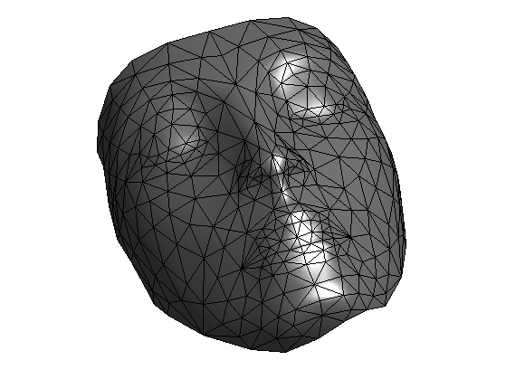
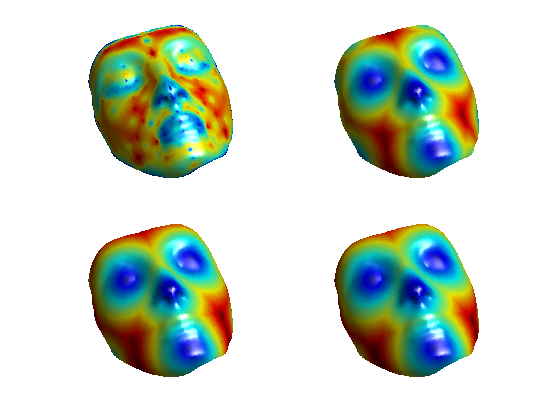
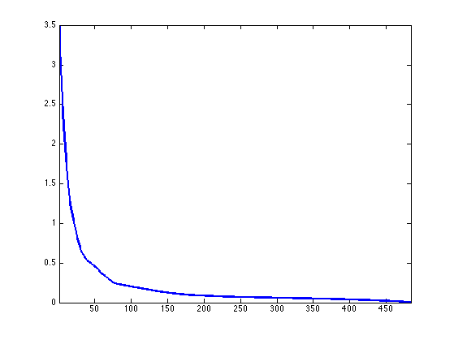
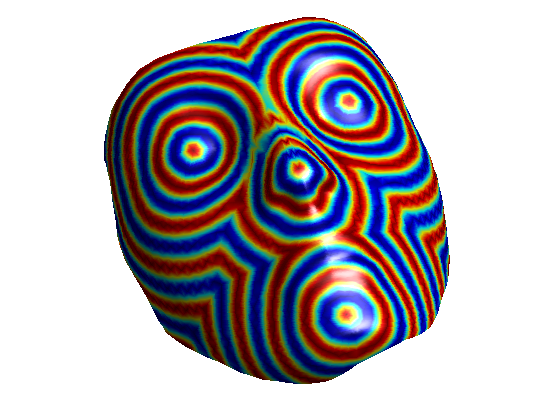
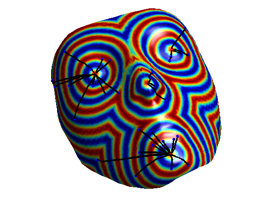
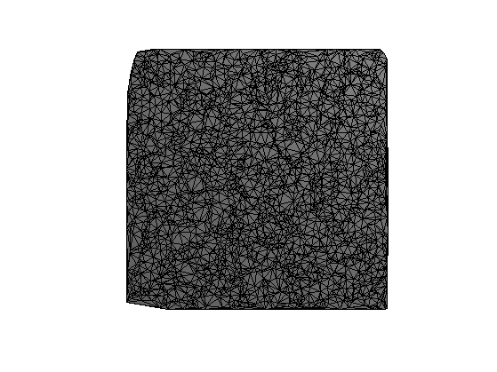
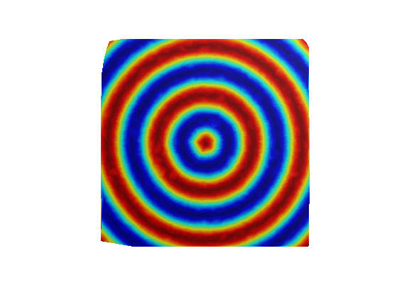
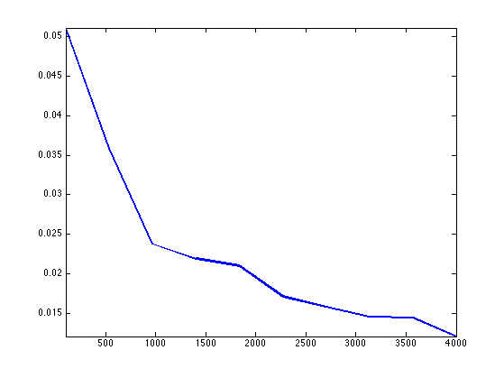
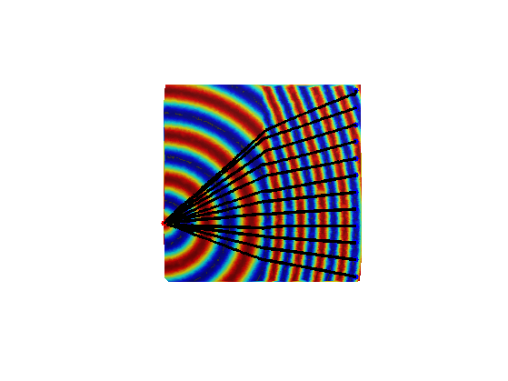

Geodesic Distance Computation on 3-D Meshes
This tour explores the computation of the geodesic distance on a mesh using an iterative algorithm to solve the Eikonal equation.
Contents
Installing toolboxes and setting up the path.
You need to download the following files: signal toolbox, general toolbox, graph toolbox and wavelet_meshes toolbox.
You need to unzip these toolboxes in your working directory, so that you have toolbox_signal, toolbox_general, toolbox_graph and toolbox_wavelet_meshes in your directory.
For Scilab user: you must replace the Matlab comment '%' by its Scilab counterpart '//'.
Recommandation: You should create a text file named for instance numericaltour.sce (in Scilab) or numericaltour.m (in Matlab) to write all the Scilab/Matlab command you want to execute. Then, simply run exec('numericaltour.sce'); (in Scilab) or numericaltour; (in Matlab) to run the commands.
Execute this line only if you are using Matlab.
getd = @(p)path(p,path); % scilab users must *not* execute this
Then you can add the toolboxes to the path.
getd('toolbox_signal/'); getd('toolbox_general/'); getd('toolbox_graph/'); getd('toolbox_wavelet_meshes/');
Triangulated Mesh
We consider a 3-D surface discretized using a triangular mesh with \(N\) vertices. We denote \( \{x_i\}_{i=1}^{N} \) the set of vertices, where \(x_i \in \RR^3\). We denote \(\Ff \subset \{1, \ldots, N\}^3\) the set of faces.
First load a mesh.
name = 'beetle'; % 1k name = 'camel'; % 600 v name = 'cow'; % 700v name = 'venus'; % 700 v name = 'mannequin'; % 400 v name = 'nefertiti'; % 300 v [vertex0,faces0] = read_mesh(name); clear options; options.name = name;
Display.
clf;
options.lighting = 1;
plot_mesh(vertex0,faces0,options);
shading('faceted');
 Perform sub-division to obtained a finer mesh.
nsub = 2; % number of subdivision steps options.sub_type = 'loop'; options.verb = 0; [vertex,faces] = perform_mesh_subdivision(vertex0,faces0,nsub,options); n = size(vertex,2);
Display.
clf;
options.lighting = 1;
plot_mesh(vertex,faces,options);
shading('faceted');

Useful shortcuts.
dotp = @(u,v)sum(u.*v,1); R = @(u)reshape(u, [1 1 length(u)]);
Shortcut for the explicit inverse of a series of 2D matrices, and the multiplication with a vector.
Inv1 = @(M,d)[M(2,2,:)./d -M(1,2,:)./d; -M(2,1,:)./d M(1,1,:)./d]; Inv = @(M)Inv1(M, M(1,1,:).*M(2,2,:) - M(1,2,:).*M(2,1,:)); Mult = @(M,u)[M(1,1,:).*u(1,1,:) + M(1,2,:).*u(2,1,:); M(2,1,:).*u(1,1,:) + M(2,2,:).*u(2,1,:)];
Control Formulation of the Eikonal Equation
Our goal is to compute the geodesic distance to a set of starting points.
We consider an isotropic metric on the mesh \(W_i > 0\).
Given a set \(I\) of starting point, we want to compute the discrete geodesic distance map \( U \in \RR^N \) to the starting points \( \{x_i\}_{i \in I} \).
Let's consider a geodesic distance \(d(x,y)\) on a manifold. A general mathematical result is that the geodesic distance \[ d(x,A) = \umin{a \in A} d(x,a) \] to a set \(A\) is the unique solution to the following equation \[ \forall \, x \notin A, \quad d(x,A) = \umin{ y \in B(x) } d(y,A) + d(x,y) \] where \( B(x) \) is a small disk around \(x\) that does not contain \(A\).
In a discrete setting, one can use this property with \(B(x_i)\) being the one ring, made of the edges connecting vertices that are around \(x_i\). Using a piecewise linear interpolation of \(U\) on the mesh, one obtain that \(U\) is a solution to a fixed point equation \[ U = \Ga(U) \] where the update operator \( \Ga : \RR^N \rightarrow \RR^N \) is defined as \[ \Ga(U)_i = \umin{ (i,j,k) \in \Ff } d_{i,j,k} \] where \[ d_{i,j,k} = \umin{0 \leq t \leq 1} t U_{j} + (1-t) U_k + W_i \norm{ t x_j + (1-t) x_k - x }. \] The quantities \( d_{i,j,k} \) can in fact be computed by solving a second order polynomial, as we describe in the following section.
Geodesic distance Computation Using Jacobi Iterations
The mapping \(\Ga\) is monotone \[ U \leq V \qarrq \Ga(U) \leq \Ga(V). \] If one uses an initialization \(U^{(0)}\) such that \(\Ga(U^{(0)}) \geq U^{(0)} \) (for instance setting \(U^{(0)}=0\)), then the iterates \[ U^{(\ell+1)} = \Ga(U^{(\ell)}) \] are increasing. One can prove that they are bounded, and hence they converge to the (unique) fixed point solution of \(\Ga(U)=U\).
Define the metric \(W_i > 0\) on the mesh. We start with the uniform (constant) metric.
W = ones(n,1);
Indexes \(I \subset \{1,\ldots,N\}\) of starting points. Warning: this list works for the mesh nefertitit refined twice. For other meshes, use the function select3dtool to retrive the indexes of a few vertices.
I = [88 2602 883 23];
Initialization of the distance map.
U = zeros(n,1);
Computation of the set of indexes for \(i,j,k\).
i = [faces(1,:) faces(2,:) faces(3,:) ]; j = [faces(2,:) faces(3,:) faces(1,:) ]; k = [faces(3,:) faces(1,:) faces(2,:) ];
x stores the position of all the \(x_i\) vertices (point where the value of \(d=d_{i,j,k}\) is computed), while x1 and x2 store respectively \(x_j-x_i\) and \(x_k-x_i\).
x = vertex(:,i); x1 = vertex(:,j) - x; x2 = vertex(:,k) - x;
ui stores \(U_{j}\), uk stores \(U_k\), w stores \(w=W_i\). We denote \(u=(U_j,U_k) \in \RR^2\).
uj = U(j); uk = U(k); u = [R(uj); R(uk)]; w = R( W(i) );
C stores the inner product matrix \(C_{s,t} = \dotp{x_s}{x_t}\), and we denote \(S = C^{-1}\).
C = [R(dotp(x1,x1)) R(dotp(x1,x2)); R(dotp(x2,x1)) R(dotp(x2,x2))]; S = Inv(C);
If we denote \(g = \al_1 x_1 + \al_2 x_2\) the (unknown) update direction, the geodesic distance (which is affine in the triangle), is written as \( U(z) = \dotp{g}{z-x} + d \) where \(d \in \RR\) is unknown.
We need to compute both \(g\) and \(d\). Since \(U(x_j)=u_1\) and \(U(x_k)=u_2\), one obtains \[ \al = S ( u - d \mathbb{I} ), \] where \(\mathbb{I} = (1,1) \in \RR^2\). Making use of the Eikonal equation \( \norm{\nabla U(x)} = \norm{g} = w \), one obtains that \(d\) is the (maximum) solution of the following second order equation \[ a d^2 - 2 b d + c = 0 \qwhereq \choice{ a = \dotp{S \mathbb{I}}{\mathbb{I}} \\ b = \dotp{S \mathbb{I}}{u} \\ c = \dotp{S u}{u} - w^2 } \]
Compute the values of \(a, b, c\).
a = sum(sum(S)); b = dotp( sum(S,2), u ); c = dotp( Mult(S,u), u ) - w.^2;
Compute the reduced discriminant \(\de = b^2 - a c\), which is always positive.
delta = max( b.^2 - a.*c, 0);
The solution is then \[ d = \frac{ b + \sqrt{\delta} }{ a }. \]
d = (b + sqrt(delta) )./a;
To ensure correctness of the scheme, the update should come from within the triangle (which correspond to the condition \[t \in [0,1]\] in the original definition of \(d_{i,j,k}\) using the control formulation). This corresponds to having \( \al_1<=0 \) and \(\al_2 \leq 0\) where \( \al = S ( u - d \mathbb{I} ) \).
Compute \(\al \in \RR^2\).
alpha = Mult( S, u - repmat(d, 2, 1) );
For the index \(i \in J\) where the update comes from outside the edge \( [x_j,x_k] \), we use an update along the edge \[ d = \min\pa{ U_j + \norm{x-x_j}W_i, U_k + \norm{x-x_k}W_i }. \]
J = find( alpha(1,1,:)>0 | alpha(2,1,:)>0 ); d1 = sqrt(dotp(x1,x1)); d1 = d1(:).*w(:) + uj(:); d2 = sqrt(dotp(x2,x2)); d2 = d2(:).*w(:) + uk(:); d = d(:); d(J) = min(d1(J), d2(J));
Now that d stores the value of d_{i,j,k} for a bunch of faces assign in U1(i) the mininimum between the previous U1(i) and all the entries in d that corresponds to a face \((i,j,k)\).
U1 = accumarray(i', d, [n 1], @min); U1(U1==0) = Inf;
Enforce the boundary conditions \(\forall i \in I, \, U_i = 0\).
U1(I) = 0;
Update the solution.
U = U1;
Exercice 1: (check the solution) Perform the full iterative algorithm until convergence. Store in err(l) the fixed point error \( \norm{ U^{(\ell+1)} - U^{(\ell)} } \). Note: you might want to put outside of the loop all the quantities that do not depend on \(u\), e.g. \(S, a, \) etc.
exo1;
Display the fixed point energy.
clf; h = plot(err); set(h, 'LineWidth', 2); axis tight;
For the display of the distance.
mycolor = @(U,k)mod(U/max(U), 1/k); mycolor = @(U,k)cos(2*pi*k*U/max(U));
Display the distance map.
clf; options.face_vertex_color = mycolor(U, 5); plot_mesh(vertex,faces,options); colormap jet(256); shading interp;
Geodesic Path Extraction
A geodesic minimal path from any point on the mesh to the starting point can be computed using a gradient descent. Since the computed geodesic distance is affine on each triangle, it makes sense to define a discretized path that is a line segment on each face.
Extract minimal paths from all over the mesh, starting from the boundary.
k = 30;
pend = round(rand(k,1)*n)+1;
options.method = 'continuous';
paths = compute_geodesic_mesh(U, vertex, faces, pend, options);
Display.
clf; plot_fast_marching_mesh(vertex,faces, mycolor(U, 5), paths, options);
Geodesic Distance Convergence
The discrete geodesic distance converges to the continuous distance when the mesh is refined.
Compute a Delaunay triangulation of random point on a square with the first point in the center.
n = 3000;
vertex = [2*rand(2,n)-1; zeros(1,n)];
vertex(:,1) = 0;
faces = compute_delaunay(vertex);
options.name = '';
I = 1;
Display.
clf
plot_mesh(vertex,faces);
shading faceted;
 Exercice 2: (check the solution) Compute and display the geodesic distance.
exo2;
Exercice 3: (check the solution) Display the convergence of the computed geodesic distance to the the true geodesic distance (which is the Euclidean distance \( \norm{x_i} \)) as \(n\) increases. Note: the triangulation with increasing number of points should be refining (i.e. a finer triangulation should contains all the other ones).
exo3;
Spacially Varying Metrics
One can define a non-constant metric on the mesh.
Triangulation of a square.
n = 8000; vertex = [rand(2,n); zeros(1,n)]; vertex(:,1) = [0 .3 0]'; faces = compute_delaunay(vertex); I = 1;
Generate a binary metric in order to produce a reflexion effect.
W = ones(n,1); W(vertex(1,:)<.5) = 1/2;
Display the metric.
options.face_vertex_color = W;
clf;
plot_mesh(vertex,faces,options);
colormap jet(256);

Exercice 4: (check the solution) Compute the geodesic distance for a metric \(W_i\) that is not constant over the mesh.
exo4;